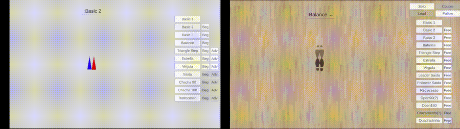
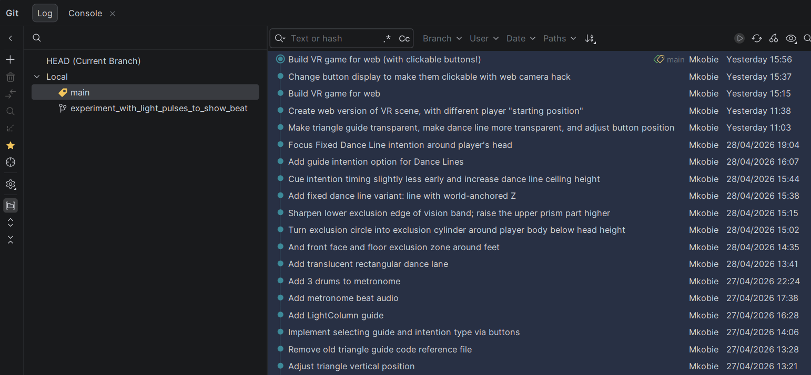

Have you ever looked at some piece of beautiful and abstract art and thought: "I could write a program that does that". I know I have!
Most recently I had this thought during an Urban Kiz dance class. Urban Kiz is a couple dance that's popular in the city I recently moved to. And unlike other dances like Lindy Hop or Salsa, the upper body stays quite still while all the action happens in the footwork. A feature that makes this dance extra programmable.
My goals here are threefold:
- First, I intend to make an interactive cheat-sheet that I can use to learn the steps in a way that makes recall of the step and its name more intuitive.
- Second, I want to make something that other people will actually use and find helpful!
- Finally, I will use this project as a chance to learn how to use AI effectively while coding. I have mixed feelings about AI, but recognize that using it is a skill that is becoming increasingly relevant in the industry I work in.
A further disclaimer on AI: I used ChatGPT and Claude Code heavily in coding this application. It's certainly been a learning experience!
Let's take a look at the web app and the VR app.
Web App

The webapp started as a helper, but quickly gained a life of its own. It serves to:
- Act as a sandbox, providing me with quick feedback on foundational dance encoding mechanisms.
- Socialize the concept, to see whether this is helpful for people beyond those of us who fall into the Venn diagram space between "kiz dancer" and "nerd".
Here it is, available to anyone to try. I hope you'll give it a go!
VR App
The VR app, on the other hand, is ultra exclusive: currently it only runs on my Meta Quest 2 headset. As much as I'd love to have you try it out for real, for now you can get a sneak peek of a prototyping stage I went through, in the app below.
This demo app was born out of an interesting challenge that came up: once the player has learned a handful of different steps, how can I use a VR environment to make the dance step I want them to do the most low friction, intuitive physical motion for them to make at a given moment?
How can I use the environment to shape the player's behaviour?
Do keep in mind that I want the player to have nice upright posture, not looking at the floor. In the end the footprints will not be shown on the ground, as we don't want the player looking at their feet the whole time.
To try it out, use WASD to move, arrow keys to look around, and mouse to click on buttons.
The "guide" options provide different ways of communicating where the player should physically be at each point in time, and the "intention" options provides two different ways of letting the player anticipate what direction is coming next.
In the end I settled on something similar to the fixed dance line, but inverted so that the line is the clear part. What approach would you have picked?
Finally, I wanted to share how my git commit history looks. Commit messages are documentation, and should provide a clear history for when you inevitably want to time-travel, whether it's to recreate an old instance of your product to make a cool before/after gif, or because you are debugging something and need to understand why a certain thing changed the way it did.

That's it for now. Check back in a few months - maybe by then I'll have a link to the full game on Steam!